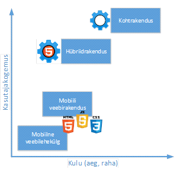

Mobiiliplatvormil õige lahendussuuna ja kõige optimeerituma arendusmudeli valimine on üheks võimalikuks edu (kulutused, levik ja kasutatavus) aluseks, kuid ka üks keerukamaid ülesandeid. Digitaalse ühiskonna trende analüüsides12 joonistub välja mudel, kus populaarsust koguvad lahendused, mis on võimelised töötama erinevatel seadmetel ja erinevatel platvormidel. Trendi põhjuseks on ka loogiline suurema turuosa haaramise perspektiiv.
Mobiiliplatvormil eristatakse kolme erinevat arendusmudelit (vt joonis 2):
Seadme tehnilisi ja funktsionaalseid võimalusi on võimalik ära kasutada vaid koht- ja hübriidrakenduse puhul (veebirakendusel see on osaline). Kohtrakenduse puhul arvestatavaks eeliseks on kiirus ja kasutatavus, ent peamiseks puuduseks on kõrged arendamise kulud. Koht- ja hübriidrakenduste puhul on võimalik kasutada rakenduste levituskanaleid (Google Play, Apple App Store, Windows Mobile Store). iOS ja WM platvormide puhul rakenduvad levituskanalites ka tootjapoolsete nõuetele vastavuse kontrollid. On selge, et erinevate vajaduste ja piirangute raames võib olla lahendussuund erinev. Joonisel 2 on toodud omavahelises võrdluses kasutajakogemus ja kulud erinevatel lähenemisviisidel.
Alljärgnevalt on toodud erinevate lähendusviiside võrdlus (vt detailsem kirjeldus Lisa 7). Rohelisega on toodud lähenemisviis kriteeriumi eelis, punasega puudus ning halliga neutraalsus.
Kriteerium |
Kohtrakendus |
Hübriidrakendus |
Veebirakendus |
Arendus-vahendid |
Sõltuvad platvormist (Java, C++/C#, .NET). |
Platvormist sõltuv tehnoloogia koos veebitehnoloogiaga. |
Veebitehnoloogia (HTML, CSS, JS). |
Koodi portatiivsus, taaskasutatavus |
Puudub. Ühele platvormile arendatud kood töötab ainult sellel platvormil. |
Kõrge. Enamus hübriidvahendeid võimaldavad portatiivsust peamistele platvormidele. |
Kõrge. Veebilehitseja ühilduvus ja jõudlus on peamised arvestatavad kriteeriumid. |
Ligipääs seadme võimalustele |
Kõrge. Platvormi SDK võimaldab ligipääsu kõigile seadme API-le. |
Keskmine. Paljud seadme API-d on veebirakendustele ligipääsmatud ja saab kasutada ainult sõltuvalt hübriidvahendist. |
Madal. Ainult väheseid API-d on avatud veebirakendusele (nt positsioneerimine), kuid nende arv suureneb. |
Kasutajaliidese järjepidevus ja ühtsus |
Kõrge. Rakendus kasutab tuttavaid, originaalseid UI/UX komponente. |
Keskmine. UI raamistikud võimaldavad saavutada keskkonnale küllaltki ligilähedase tulemuse. |
Keskmine. UI raamistikud võimaldavad saavutada keskkonnale küllaltki ligilähedase tulemuse. |
Levitatavus |
Levituskanalid pakuvad turustusvõimalusi, kuid lisaks toovad kaasa nõuete täitmise ja piirangutele vastamise kohustuse. |
Levituskanalid pakuvad turustusvõimalusi, kuid lisaks toovad kaasa nõuete täitmise ja piirangutele vastamise kohustuse. |
Käivitamiseks piirangud puuduvad, kuid puuduvad ka levituskanali võimalused (eeldab kasutaja teadlikumat tegutsemist). |
Jõudlus |
Kõrge. Ligipääs rakenduse funktsionaalsusele, mis päädib parema jõudlusega. |
Madal. Keerukate rakenduste puhul hübriidvahendi abstraktsioonikiht mõjutab jõudlusnäitajaid. |
Madal. Jõudlus sõltub seadme veebilehitsejast ja võrguühendusest. |
Tulu teenimise võimekus |
Kõrge. Võimalused tulu teenimiseks, kuid levitus-kanalid võtavad vahendus-tasu. |
Kõrge. Võimalused tulu teenimiseks, kuid levitus-kanalid võtavad vahendustasu. |
Madal. Puuduvad levitus-kanali vahendustasud jm lõivud, kuid tulu teenimise võimalused vähesed. |
Uuenduste paindlikkus |
Madal. Alati läbi levituskanali, millel on oma reeglid. |
Keskmine. Tavaliselt läbi levituskanali. |
Kõrge. Tsentraalse koodibaasi põhised uuendused. |
Paigaldatavus |
Kõrge. Alati läbi levituskanali. |
Kõrge. Alati läbi levituskanali. |
Keskmine. Seadme veebilehitseja vahendusel. |
Turvalisus |
Kõrge. Võimaldab täies mahus rakendada seadme turvamudelit (täiendavalt iOS/WM levituskanalite poolsed turvakontrollid). |
Keskmine. Wrapperi osas on võimalik rakendada seadme ja levituskanalite turvamudelit. Veebikomponendi puhul andmetöötlus toimub serveris, kuid komponendi turve vajab tähelepanu (JS, HTML5). |
Keskmine. Andmetöötlus toimub serveris, seega turbe tagamiseks üks keskpunkt, mille haldus on lihtsam võrreldes hajutatud lahendustega. |
Arenduse kulukus |
Kõrge. Tüüpiliselt kõrgem kolmest, kui arendada erinevatele platvormidele. |
Keskmine. Analoogsed veebirakendusega, täiendavad kulud kaasnevad hübriid-vahendite kasutamisega. |
Keskmine. Madalaimad kulud, kuna kasutatakse ühte koodibaasi ja ühtset teadmusruumi. |
Tabel 3. Rakenduse tüüpide võrdlus
Hübriidrakendus võib tunduda esmapilgul suhteliselt madalate kulude tõttu ideaalne eesmärkide saavutamiseks, kuid siiski tuleb rakenduse tüübi valikul arvestada ärimudeli ja rakenduse nõudeid/eripära. Sõltuvalt rakenduse kriitilistest ja olulistest aspektidest lähtuvalt ei pruugi hübriidrakendus siiski olla paslik.
Teatud nõuete puhul ei pruugi kohtrakendusele olla alternatiivi – nt kui rakenduvad kõrgeimad võimalikud käideldavusnõuded, ülim kasutusmugavuse ja –kogemuse vajadused, täielike seadme võimekuste ärakasutamise vajadus jne. Kohtrakenduse arendamine loob võimalused seadme riist- ja tarkvaralisi komponente kasutada, mis suurendab valdkonna perspektiivikust (nt. automaatne asukohatuvastus allkirjastamisel, integratsioonivõimalused seadme baastarkvaraga, NFC tehnoloogia kasutamine jne). Täna turul eksisteerivad DigiDoc rakendused (vt ka Lisa 6) on teadaolevalt arendatud kõik kohtrakendustena.
[12] Media Metrix Multi-Platform. comScore (Feb 2013 – Jul 2013) [URL]